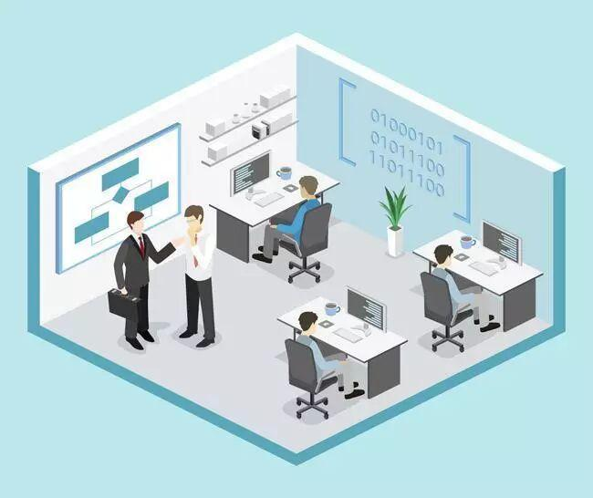
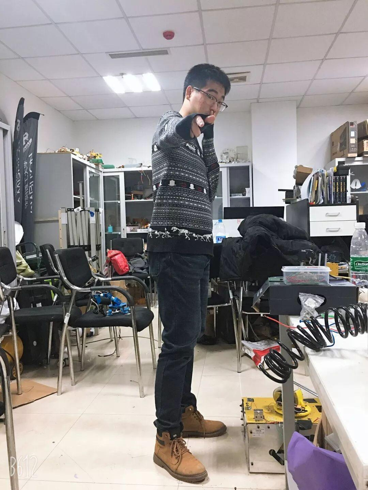
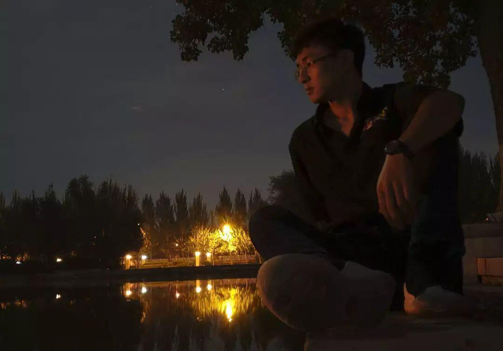
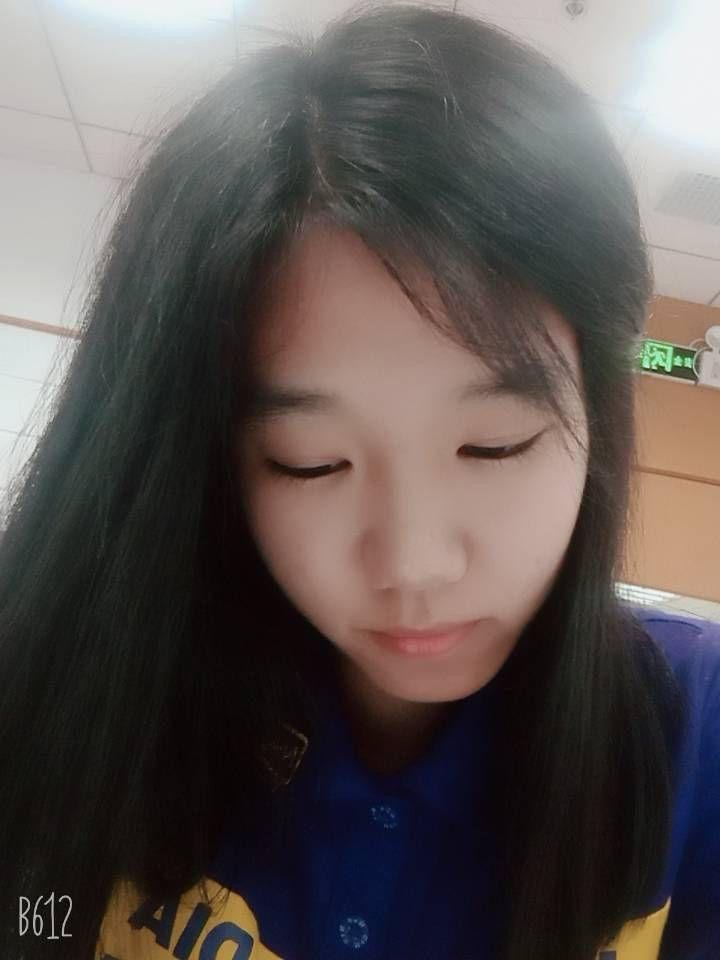
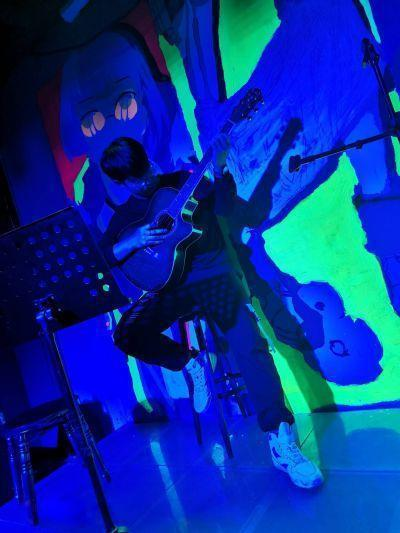
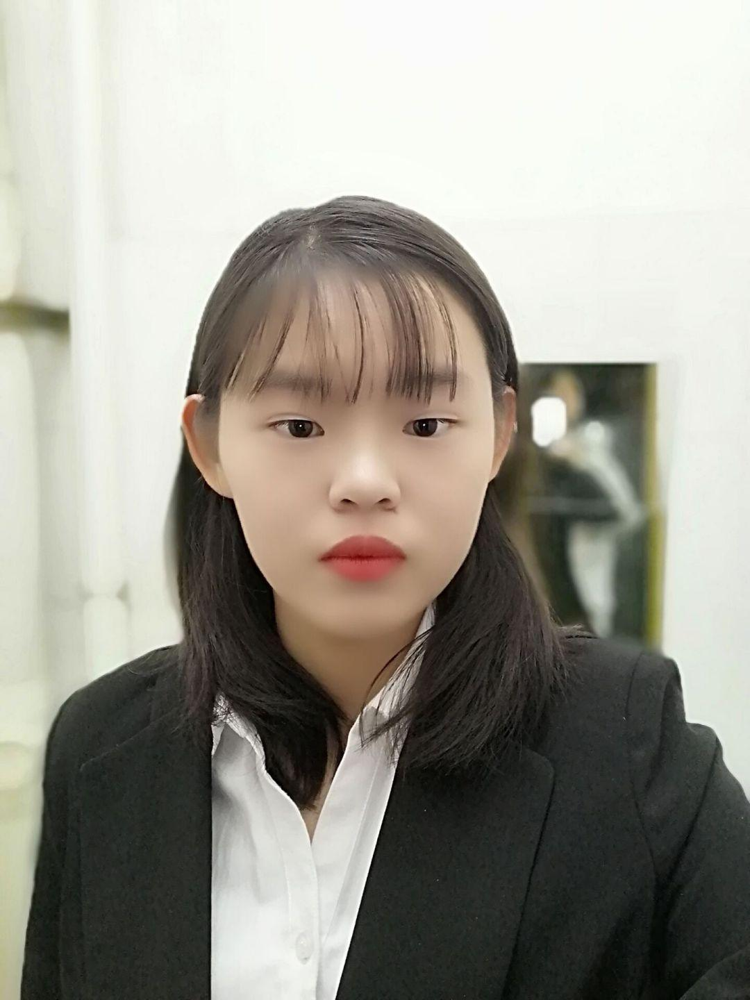
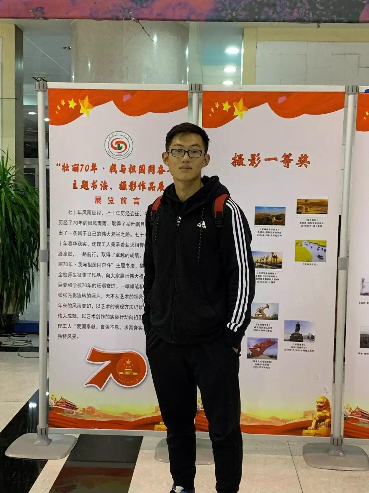

办公室--运筹帷幄之中，决胜于千里之外

电协的“心脏”—办公室 |
办公室职能
1.通知的上传下达
2.各部门之间的沟通和联系
3.活动的总体架构的构建和策划
4.日常与社联沟通进行日常活动交表审批，竞赛期间沟通老师及组委会，及时获取最新动态并进行相应安排
办公室人员介绍

Hello大家好，我叫陈泽天来自自动化与电气工程学院，目前是电子技术与应用协会办公室的一名成员。入大学，到电协，心中犹豫不决；转眼间，转瞬间，已是匆匆一年。从当初的热情与激情，变成了现在的责任与信任；从当初的不知天高地厚，变成了现在的成熟稳重；从当初温室中弱不禁风的花朵，变成了现在逆境中茁壮成长的大树。电协教会了我很多，也让我成长了很多。
大家好，我是18级测控技术与仪器的李沁宇，加入电协已经1年了。在电协，你可以了解到与技术有关的许多知识，交到志同道合的朋友，欢迎大家加入到电协这个大家庭。

吴宇航，极度重感情患得患失患者。在电协的家族里希望可以榨干自己所有精力，也希望可以帮助电协所有成员守住当初想来这里的初心。未来可期，多多指教。
hi~小可爱们，你们好呀！我是来自机械工程学院的李嘉辰。做你所想，爱你所爱✨遇见电协是我的幸运。


Hello，我叫张泽华，是信息院物联网专业大一学生，来自天津，我很高兴被电协的办公室录取，本人喜欢体育，爱好广泛，活泼可爱，希望大家可以喜欢我这个小可爱。
大家好，我是温龙，来自装备院探测制导与控制技术专业，现为电协办公室成员，本人热爱运动，虽然不怎么爱动，平时吧，偶尔疯癫，偶尔沉思，爱尝试新事物，希望后面能完成更多自己热爱的事情。


大家好，我是栾鑫玉，来自自动化与电气工程学院，热爱生活，热爱学习，座右铭:你可知道我拼搏不怕阻挡，就一个理由，我要得到我想要的东西。
大家好，我是王磊，来自信息科学与工程学院。喜欢看书，篮球，听歌。希望为电协贡献自己的力量，并提升自己。

我是环境与化学工程学院的孙全杰，平时喜欢听音乐，打篮球、跑步等运动，兴趣广泛，爱好电子机械设计，动手能力强，喜欢交朋友。

文案|辛学敏
排版|辛学敏
图片|办公室
想了解更多资讯，请关注我们~